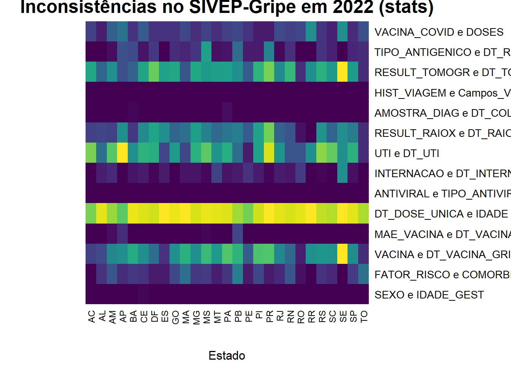

load("data/dados_oobr_qualidados_SIVEP_Inconsistencia_2009_2023.rda")
dados <- dados_oobr_qualidados_SIVEP_Inconsistencia_2009_2023Mapas de Calor no R
Introdução
Dentro do contexto da análise de dados, a necessidade de criar elementos visuais para representar e/ou resumir informações presentes em conjunto de dados culminou na criação de diversos tipos de representações gráficas, entre elas o mapa de calor. De forma geral, um mapa de calor utiliza um gradiente de cores para representar quantificadamente uma determinada matriz. No R, há diversas maneiras de criar mapas de calor, e cada método ou pacote oferece diferentes funcionalidades e estilos, entretanto antes do avanço da computação já havia registros da utilização desse método de visualização de dados. No contexto histórico, um dos exemplos de utilização mais antigos é datado em 1873, quando Toussaint Loua - um estatístico francês - usou matriz desenhadas a mão e coloridas para a visualização das estatísticas de indicadores sociais dos distritos de Paris 1. Neste tutorial, será explicado em que contexto optar por utilizar um mapa de calor, qual a natureza os dados devem ter, além de comparar três abordagens populares para a criação de mapas de calor no R: a função heatmap do pacote {stats}, o pacote {ggplot2} e o pacote {pheatmap}. A prática será realizada com os dados do Observatório Obstétrico Brasileiro, mais especificamente os dados desenvolvidos para o painel Qualidados que avalia um parâmetro denominado inconsistência. Um dado é considerado inconsistente se há informações que parecem ilógicas e/ou incompatíveis a partir da análise da combinação dos dados informados em dois ou mais campos do formulário. Esse indicador é utilizado no Qualidados para avaliar três bancos de dados, o Sistema de Vigilância Epidemiológica da Gripe (SIVEP), o Sistema Nacional de Nascidos Vivos (SINASC) e o Sistema de Informações sobre Mortalidade (SIM), entretando neste tutorial focaremos em avaliar inconsistências no SIVEP.
Quando utilizar mapas de calor?
O mapa de calor é um recurso gráfico muito usado. Mas quando ele é a melhor escolha?
Dados numéricos em matriz
Mapas de calor funcionam melhor quando os dados estão organizados em uma estrutura tabular, entretanto nem sempre os dados vão ser disponibilizados neste formato específico. Ao receber um banco de dados, muitas vezes haverá variáveis com natureza categórica e/ou numérica. Quando lidamos com dados numéricos organizados em formato matricial, como indicadores econômicos, taxas de mortalidade ou correlações entre variáveis, o mapa de calor permite visualizar padrões de forma direta ao avaliar a intensidade da cor.
Cruzamento entre variáveis categóricas
Em muitos casos, temos duas variáveis categóricas e queremos observar como as categorias de uma variável se comportam em relação à outra. Por exemplo, ao cruzar os tipos de inconsistência (VARIAVEL) com as unidades da federação (ESTADO), o mapa de calor permite visualizar quais categorias se destacam — seja pela quantidade, pela frequência ou pela proporção de inconsistências.
Neste cenário, o valor numérico que preenche a célula da matriz (por exemplo, a proporção de inconsistências) é que orienta a variação da cor.
Dados mistos: categóricos e numéricos
Muitos bancos de dados contêm tanto variáveis categóricas quanto variáveis numéricas.
Nesses casos, o mapa de calor é útil para:
Comparar grupos diferentes de forma visual e rápida;
Identificar quais subgrupos têm valores mais altos ou mais baixos;
Revelar padrões ou diferenças sutis que podem passar despercebidas em tabelas comuns.
Dados com estruturas não ordenadas
Diferente dos gráficos de linha, o mapa de calor não exige uma ordenação natural dos eixos. Mesmo quando as variáveis são categorias nominais sem hierarquia (como nomes de estados ou tipos de erro), a variação de cor permite identificar padrões de forma eficiente. Isso torna o mapa de calor especialmente útil quando lidamos com combinações de variáveis categóricas associadas a valores numéricos.
Entretanto, mapas de calor ainda podem e são costumeiramente utilizados em contextos com ordenação, como por exemplos para visualização de clusters hierarquicos, onde os eixos são reorganizados para refletirem a semelhança entre observações. Dito isso, neste tutorial não será abordado visualização de cluster hierárquicos.
Pré-processamento dos dados
Os dados do Observatório Obstétrico Brasileiro estão disponíveis no Synapse, uma plataforma utilizada como suporte para colaborações científicas focadas em open source e disponibilização de dados da área da saúde.
Iniciaremos baixando o banco de dados que será chamado de “dados”.
Os dados foram disponibilizados em formato .rda - um formato de dados nativo do R -, para baixar os dados é só utilizar a função load() e renomear. Algumas das funções que iremos abordar só aceitam entrada de dados em formato matricial, então é necessário converter os dados utilizando `as.matrix(). Para isso, é necessário avaliar o formato em que os dados foram disponibilizados e manipular estrutura de acordo com a necessidade.
head(dados) MUNICIPIO ESTADO VARIAVEL ANO INCONSISTENTES TOTAIS
1 CURITIBA - PR PR SEXO e IDADE_GEST 2020 0 237
2 TERESINA - PI PI SEXO e IDADE_GEST 2020 0 303
3 SAO PAULO - SP SP SEXO e IDADE_GEST 2020 0 1496
4 GUARULHOS - SP SP SEXO e IDADE_GEST 2020 0 155
5 SAO CAETANO DO SUL - SP SP SEXO e IDADE_GEST 2020 0 11
6 SOBRAL - CE CE SEXO e IDADE_GEST 2020 0 232Observa-se que os dados estão em formato agregado (também chamados de dados sumarizados), pois cada linha não representa um indivíduo, mas sim uma unidade geográfica (município) em um ano específico, com um resumo estatístico (número total de registros e inconsistências) para uma determinada variável. As colunas estão descritas:
- MUNICIPIO: nome do município, acompanhado da sigla da unidade federativa;
- ESTADO: sigla da unidade federativa (UF);
- VARIAVEL: dados preenchidos no questionário do SIVEP-Gripe que apresentam inconsistência entre si (ex.: “SEXO e IDADE_GEST” indica uma inconsistencia lógica da informação preenchida entre as variáveis SEXO e IDADE GESTACIONAL).
- ANO: ano de referência dos dados;
- INCONSISTENTES: número de registros considerados inconsistentes para aquela variável naquele município e ano;
- TOTAIS: número total de registros (somando inconsistentes e válidos) para a combinação de município, variável e ano.
Se temos como objetivo construir um mapa de calor da porcentagem de inconsistências por estado para cada variáveis é necessário fazer umas modificações no banco de dado para transformar os dados em inputs aceitáveis paras as funções que plotam os gráficos.
No caso destes dados, iniciamos criando uma variável nos dados chamada “porcentagem_inconsistências” com base nas variáveis “TOTAL” e “INCONSISTENTES” utilizando o pacote {dplyr} para fazer a manipulação.
library(dplyr)
library(tidyr)
# Filtrando e calculando a porcentagem de inconsistências
dataset_aux <- dados %>%
filter(ANO == 2023) %>%
group_by(VARIAVEL, ESTADO) %>%
summarise(PORCENTAGEM_INCONSISTENTES = sum(INCONSISTENTES) / sum(TOTAIS), .groups = "drop")
head(dataset_aux)# A tibble: 6 × 3
VARIAVEL ESTADO PORCENTAGEM_INCONSISTENTES
<fct> <chr> <dbl>
1 SEXO e IDADE_GEST AC 0
2 SEXO e IDADE_GEST AL 0
3 SEXO e IDADE_GEST AM 0
4 SEXO e IDADE_GEST AP 0
5 SEXO e IDADE_GEST BA 0
6 SEXO e IDADE_GEST CE 0.0143Neste código, foi criado um novo objeto chamado dataset_aux a partir do objeto original dados, utilizando %>% para encadear os seguintes comandos:
filter(ANO == 2023): filtra o conjunto de dados para manter apenas as linhas referentes ao ano de 2023;group_by(VARIVEL, ESTADO): agrupa os dados pelas variáveis VARIAVEL e ESTADO. Isso permite que o cálculo posterior seja feito para cada combinação dessas categorias;summarise(PORCENTAGEM_INCONSISTENTES = sum(INCONSISTENTES) / sum(TOTAIS), .groups = "drop"): dentro de cada grupo definido acima, calcula a porcentagem de inconsistências, ou seja, o total de registros inconsistentes dividido pelo total geral de registros. O argumento.groups = "drop"serve para remover o agrupamento após o resumo, retornando um data.frame não agrupado.
Depois de criar a data.frame que será o valor da matriz do nosso mapa de calor, é necessário transformar o objeto dataset.aux em uma matriz.
# Transformando para formato largo
matriz_dados <- dataset_aux %>%
pivot_wider(names_from = ESTADO, values_from = PORCENTAGEM_INCONSISTENTES) %>%
as.data.frame()
rownames(matriz_dados) <- matriz_dados$VARIAVEL
matriz_dados <- as.matrix(matriz_dados[ , -1])Usa-se os pacotes {dplyr} e {tidyr} para transformar os dados de formato longo para formato largo.
A função `pivot_wider() do pacote {tidyr} reorganiza os dados para que cada valor único da coluna ESTADO se torne uma nova coluna, preenchida com os valores correspondentes de PORCENTAGEM_INCONSISTENTES.
Após isso, definimos a coluna VARIAVEL como o nome das linhas da matriz, e usamos as.matrix() para converter o data.frame resultante em uma matriz numérica adequada para as funções de mapa de calor.
Formatos de organização de dados
Há dois formatos de organização de dados comumente encontrados, eles são ditos formato longo e formato largo. Dados que estão no formato longo são organizados de forma que cada linha representa uma única observação e as variáveis de interesse são empilhadas em colunas. O formato largo organiza os dados de modo que cada ID ou entidade seja colocada em uma coluna distinta que representa uma variável específica. Diferentemente do formato largo, onde cada variável tem sua própria coluna, no formato longo, múltiplas observações para a mesma variável são empilhadas em uma única coluna, com outras colunas identificando a unidade.
Dentro do contexto do pré processamento de dados que foi realizado, os dados foram disponibilizados em formato longo, que é aceito pelo pacote ggplot, e manipulados para o formato largo para converter em matriz e ser utilizado nas funções heatmap() e pheatmap().
Mapas de Calor com {base}
Para a construção de mapas de calor de forma simples, o R possui uma função nativa no pacote {stats} chamada heatmap(). Essa função exige dados em formato de matriz, como o objeto matriz_dados utilizado abaixo:
heatmap(matriz_dados,
Rowv = NA,
Colv = NA,
col = colorRampPalette(c("pink", "darkred"))(100),
scale = "none",
xlab = "Estado",
ylab = "Variável",
main = "Inconsistências no SIVEP-Gripe em 2022 (base)"
)
Os parâmetros Rowv = NA e Colv = NA definem se as colunas e linhas devem ser reordenadas, definindo NA, a ordenação automática é desativada. A paleta de cores, definida por col, varia de rosa a vermelho escuro usando colorRampPalette(). Os dados são apresentados sem qualquer escala (scale = "none"), preservando seus valores originais. Os rótulos do eixo e títulos são definidos pelo xlab, ylab e main.
Apesar de ser uma escolha simples e direta, a personificação da função heatmap é limitada, tornando menos eficiente quando necessário lidar com banco de dados que exigem um maior nível de customização.
Mapas de Calor com {pheatmap}
Em contrasrte, iremos construir um mapa de calor usando o o pacote {pheatmap}. Este pacote foi projetado especificamente para criar mapas de calor, oferecendo múltiplas opções de personalização. No entanto, para utilização é mais complexo que o pacote heatmap e, comparadado com ggplot(), é menos flexível em termos de integração com outros elementos gráficos.
library(pheatmap)# chamando biblioteca
pheatmap(matriz_dados,
cluster_rows = FALSE,
cluster_cols = FALSE,
color = colorRampPalette(c("pink", "darkred"))(100),
fontsize = 8,
main = "Inconsistências no SIVEP-Gripe em 2022 (pheatmap)"
)Esta função também só aceita como input os dados em formato de matriz, por isso utilizaremos o matriz_dados. Aqui, cluster_rows = FALSE e cluster_cols = FALSE indicam que não deve haver agrupamento (clustering) automático das linhas ou colunas. O paramêtro color especifica a paleta de cores. fontsize = 8 ajusta o tamanho da fonte utilizada nos textos e main() define o título.
Mapas de Calor com {ggplot2}
O ggplot() oferece uma grande flexibilidade para personalização gráfica e aceita dados em formato longo. Por isso, utilizaremos o dataset_aux.
library(ggplot2) # chamando biblioteca
ggplot(dataset_aux, aes(x = ESTADO, y = VARIAVEL,
fill = PORCENTAGEM_INCONSISTENTES)) +
geom_tile() +
scale_fill_gradient(low = "pink",
high = "darkred",
name = "Porcentagem",
labels = scales::percent) +
theme_minimal() +
labs(title = "Inconsistências no SIVEP-Gripe em 2022 (ggplot)")Neste código, aes() define as variáveis do eixo x e do eixo y. scale_fill_gradiente ajusta a escala de cores do preenchimento das células do mapa de calor. Ele define a cor inicial (low) como “pink” e a cor final (high) como “darkred”. O argumento name define o rótulo da legenda de cores como “Porcentagem”,labels especifica que os rótulos na legenda serão formatados como percentuais usando a função scales::percent. theme_minimal() define o tema do gráfico comom minimalista. labs() define o titulo do gráfico.
ggplot() embora ofereça uma gama mais ampla de opções, não será de fácil utilização para pessoas que não tenham conhecimento prévio sobre a ferramenta. Dito isso, é interessante aprender ggplot2, pois é uma ferramenta que permite criar variados tipos de gráficos. No OObr, o aluno Pedro Brito apresentou um minicurso de ggplot2 em um workshop de Ciência de Dados, disponível neste link.
Conclusão
Por fim, neste tutorial, após apontar a utilidade e origem do mapa de calor como um recurso gráfico, também foi apontado diversos métodos de construção de mapas de calor utilizando a ferramenta R. Desta forma, percebe-se que a escolha entre essas opções depende das necessidades específicas do projeto, da familiaridade com cada função e do nível de personalização desejado.
Referências
[1] Wilkinson L, Friendly M (maio de 2009). «The History of the Cluster Heat Map». The American Statistician. 63 (2): 179–184. CiteSeerX 10.1.1.165.7924 Acessível livremente. doi:10.1198/tas.2009.0033